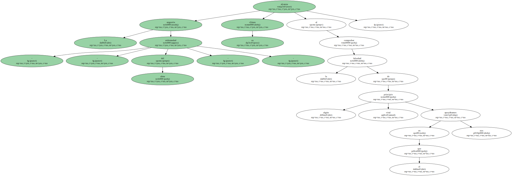
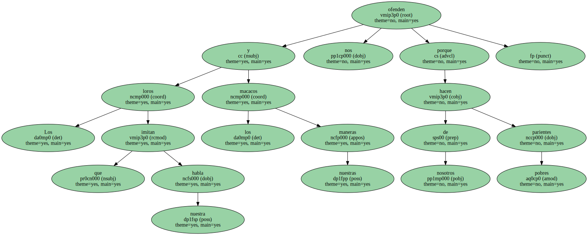
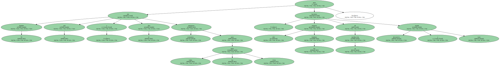
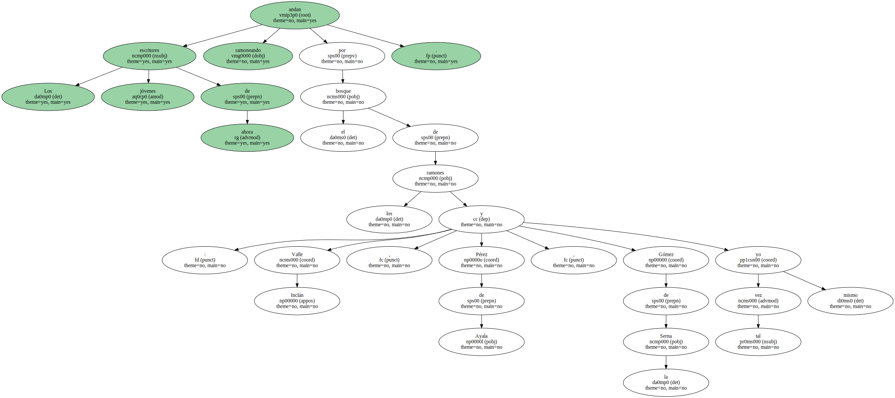
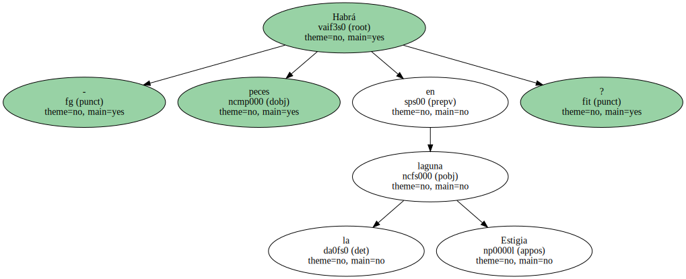
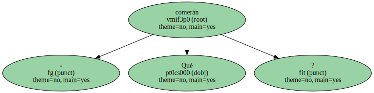
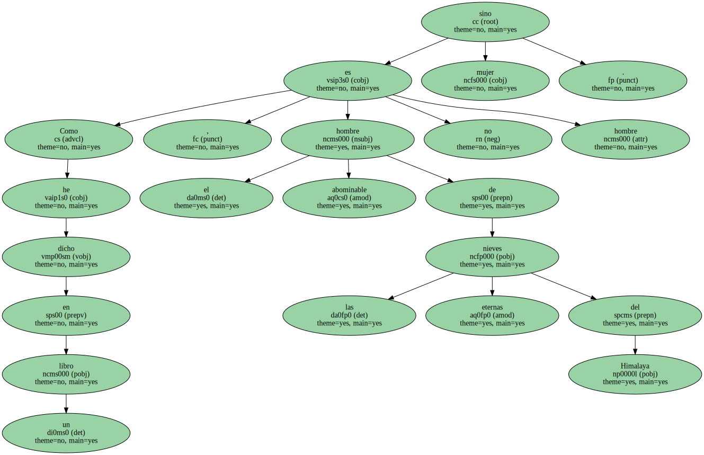

La angustia - - enfermedad del alma - - alcanza su clímax al comprobar la falsedad de algún principio vital en el que nos apoyábamos.
Los loros que imitan nuestra habla y los macacos nuestras maneras nos ofenden porque hacen de nosotros parientes pobres.
El hambre , la sed y el frío son amenazas constantes para todos los seres vivos , pero sólo nosotros los hombres hacemos de su satisfacción alarde decorativo y vano.
Los jóvenes escritores de ahora andan ramoneando por el bosque de los ramones : Valle Inclán , Pérez de Ayala , Gómez de la Serna y tal vez yo mismo.
Podríamos añadir Ramón y Cajal que escribió Tónicos de la voluntad , Charlas de Café , Cuentos de Vacaciones con los que se pueden sugerir esos tónicos de café con gotas que llaman ahora carajillos y que tanto cuentan en las tertulias.

- Habrá peces en la laguna Estigia.
- Qué comerán.
Como he dicho en un libro , el abominable hombre de las nieves eternas del Himalaya no es hombre sino mujer.
